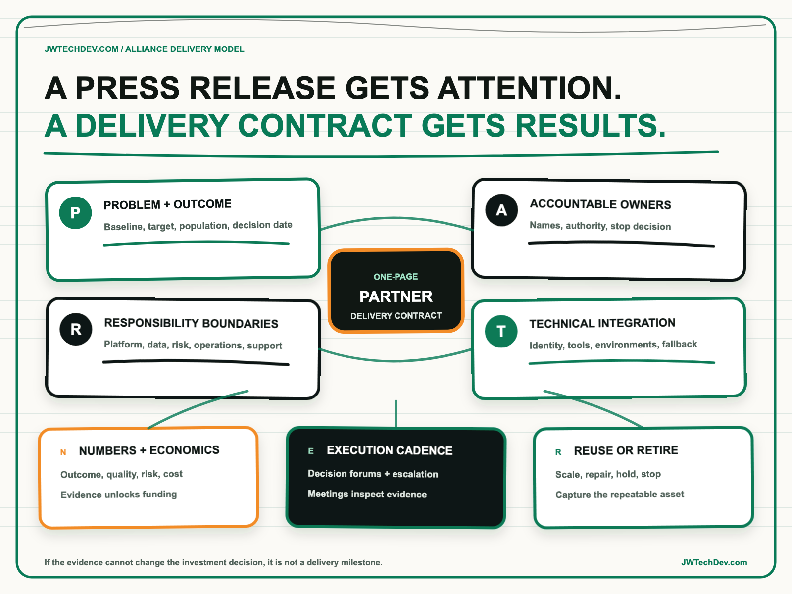

A partnership press release is not a delivery model.
A partnership announcement can create attention, executive air cover, and pipeline. It cannot decide who owns the customer outcome, how two organizations will build together, what evidence unlocks the next investment, or who acts when delivery stalls. Those decisions need an operating contract.

Quick answer
An enterprise AI partnership becomes a delivery model only when both parties agree on seven things: the problem and outcome; accountable owners; responsibility boundaries; technical integration; numbers and economics; execution cadence; and reuse or retirement. I call this the PARTNER Delivery Contract.
It is not a substitute for a legal agreement, statement of work, or architecture. It is the one-page operating layer that connects them. If an executive cannot see the owner, next proof point, decision date, and evidence required to continue, the partnership is still a narrative.
Why the announcement gap appears
Partnership language is designed to express shared ambition. Delivery requires shared constraints. One company may believe it is providing a platform while the other believes it is receiving a finished solution. One team may optimize for product adoption while another is accountable for revenue, risk reduction, or customer experience. Everyone can celebrate the same announcement while carrying a different definition of success.
AWS Well-Architected says teams need shared goals, clear responsibilities, understood decision authority, and awareness of how each team contributes to the success of the others. AWS guidance for AI-enabled application delivery similarly treats operating-model transformation as a phased program involving governance, skills, tools, performance measures, human oversight, and partner relationships. The consistent signal is that technology access alone does not create operating alignment.
The gap grows with AI because the system may depend on third-party models, data, tools, managed services, evaluators, and delivery teams. NIST's AI Risk Management Framework explicitly calls for clear roles, trained personnel and partners, and procedures for third-party AI risks. A partnership therefore needs more than a joint roadmap. It needs explicit decision rights across the full lifecycle.
The PARTNER Delivery Contract
P — Problem and outcome. Name one business problem, the population affected, the current baseline, and the outcome the partnership intends to change. “Accelerate AI adoption” is not measurable. “Reduce the time required to resolve a defined support journey while maintaining quality and escalation standards” is.
A — Accountable owners and authority. Name one executive outcome owner and one delivery owner from each organization. Record which decisions each person can make without forming a new committee. Include the person who can stop the work when risk, cost, or evidence moves outside the agreed boundary.
R — Responsibility boundaries. Separate platform responsibility, solution responsibility, customer data, identity, security, evaluation, deployment, operations, support, and change management. AWS operating-model guidance distinguishes customer accountability from activities that may be implemented or managed with partners. The useful artifact is not a generic RACI. It is a boundary map tied to real decisions and artifacts.
T — Technical integration and environments. Define the reference architecture, interfaces, identity path, data classes, tool permissions, environments, observability, release process, and fallback. A demo that runs in one party's sandbox does not prove that the customer can operate it. Production readiness must include the system around the model.
N — Numbers and economics. Agree on business, adoption, quality, risk, reliability, and cost measures before building. Include the baseline, target, source of truth, review frequency, and funding threshold. Production AI has continuing inference, data, evaluation, monitoring, support, and improvement costs. The economic model must include the loaded operating cost, not just the initial build.
E — Execution cadence and escalation. Set a working-team rhythm, executive decision cadence, architecture forum, risk review, and escalation clock. Every meeting should exist to inspect evidence or make a decision. Status without a decision path is reporting theater.
R — Reuse, expansion, or retirement. Decide what becomes reusable intellectual property, a repeatable accelerator, a supported product capability, or customer-specific configuration. Define the evidence required to expand to another workflow or market. Also define how the parties will retire access, data, models, tools, and support obligations if the outcome is not achieved.
Fund evidence, not enthusiasm
The first partnership milestone should be a decision-quality proof, not a miniature production program. It should test the riskiest assumption with representative users, realistic data boundaries, observable behavior, and a documented fallback. The proof should end with a clear scale, repair, hold, or stop decision.
This changes the commercial conversation. Instead of asking whether both companies remain excited, leaders ask whether the evidence supports more capital. Instead of measuring partnership activity by workshops, certifications, and pipeline alone, they inspect customer outcomes, reusable capability, delivery speed, operating cost, risk findings, and the quality of the joint execution system.
A strong partnership can still include marketing. The press release becomes credible because the delivery system underneath it can explain what changed, what was learned, and what the two organizations can now repeat.
What to do next Monday
- Choose one announced partnership. Do not start with the entire alliance portfolio.
- Write the outcome in one sentence. Add a baseline, target, population, and decision date.
- Fill the seven PARTNER fields. Use names, systems, evidence, thresholds, and dates rather than departments and aspirations.
- Map the responsibility boundaries. Include data, identity, evaluation, operations, support, and the authority to pause.
- Select the riskiest assumption. Build the smallest proof capable of changing an investment decision.
- Book the evidence review now. Decide in advance who can scale, repair, hold, or stop the work.
- Define the reusable asset. Capture what the partnership will be able to repeat after the first customer outcome.
The partnership is real when both organizations can explain not only what they announced, but how they will make decisions together when the work becomes difficult.
I will be at AFROTECH in Houston November 2-6. If you are building an enterprise AI platform, global delivery organization, or technical go-to-market motion, I would be glad to compare notes.
Sources checked
- AWS Well-Architected: operating model
- AWS Prescriptive Guidance: overview of an AI-powered application delivery operating model
- AWS Prescriptive Guidance: implementing an AI-powered target operating model
- AWS Prescriptive Guidance: delivering and sustaining generative AI value
- NIST AI Risk Management Framework Core
- AWS: Amazon Connect Customer delivery partners
Turn the alliance into an operating contract
Explore more practical frameworks for enterprise AI, cloud architecture, governance, and technical leadership.
Get the free starter kit